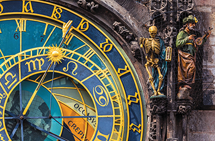
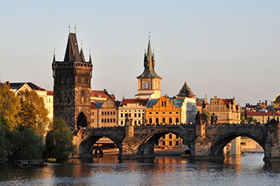

Prague
According to one legend, Prague’s magnificent destiny was prophesied even before its founding:
“I see a great city whose glory will touch the stars.”
These words utter by the mythical Princess Libuše supposedly determined the place in the deep forests around the river Vltava where the first inhabitants were to build a castle and thus the foundation for a new town.
An inexplicable connection between the city and the stars, astronomy and astrological magic is characteristic of Prague to this day. Perhaps it is even thanks to some lucky star that Prague has managed to escape all major wars and disasters, allowing it to retain its unique character, in which architectural styles from an entire millennium blend into one picturesque whole whose parallel you will not find anywhere else in the world.
Prague’s mysterious atmosphere has again and again captivated its visitors, among them the most prominent personalities of science, art and politics, who stopped at this crossroads in the middle of Europe or even tied their fate to the city for a longer time. But gives Prague its grace and beauty? What is her secret? From whence comes the “inexplicable supernatural" that the Czech writer Jakub Arbes notices in Prague?
We never seem to find a simple answer, because something is hidden beneath the surface in Prague which is eludes our daily experience and defies our understanding. Whoever wants to get to know Prague must know something about her – something which cannot be read in even the best-researched guidebooks. That means only one thing – it is necessary to see her, to walk through her streets, and to see with your own eyes the city of eccentrics and visionaries, the restless heart of Central Europe, as it once was described by the German writer Oskar Wiener. Not even the best poem or novel can capture even a fraction of her mystery and beauty.